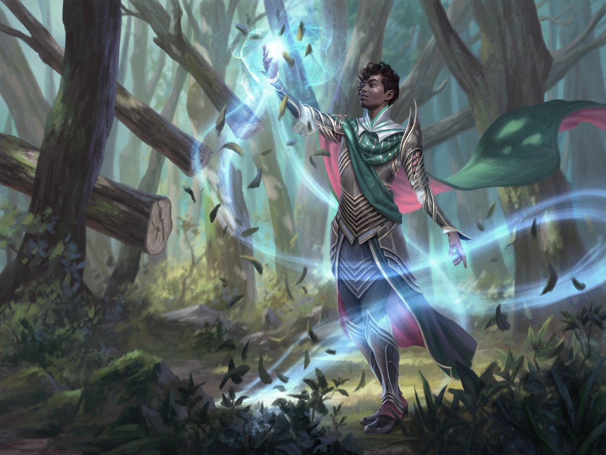

Arcane Fundamentals is the essential introductory course for aspiring spellcasters,
covering the theoretical and practical foundations of magic. Students will learn
the nature of Aether, how to channel it, and the fundamental laws that govern
magical interactions. This course focuses on safe, controlled spellcasting,
preparing students for more specialized magical disciplines.
Course Objectives
By the end of the course, students will:
Understand the nature and properties of Aether.
Develop their Aetheric Perception—the ability to sense and manipulate raw magical energy.
Learn basic Aether Channeling and control techniques.
Gain proficiency in simple Cantrips and low-tier spells.
Understand the dangers and limitations of spellcasting.
Learn the foundational laws of magic:
Conservation of Aether
Law of Exchange
Resonance Principle
Course Syllabus
Week 1-2: The Nature of Magic & Aether
What is Aether? (Historical and theoretical perspectives)
How Aether interacts with the material world
The role of the caster’s Will, Intent, and Focus
The University of Melbourne is committed to providing students with reasonable adjustments to assessment
and participation under the Disability Standards for Education (2005), and the
Assessment and Results Policy (MPF1326). Students are expected to meet the core participation
requirements for their course. These can be viewed under Entry and Participation Requirements for the
course outlines in the Handbook.
Attendance Hurdle requirement: Students are required to attend at least 16 out of 22 practice classes to be eligible for assessment.
During the teaching period
10%
A midsemester practical exam demonstrating control over various cantrip level spells. Mark dependent on control, duration and power.
Week 6
30%
A practical examination
30 mins During the examination period
60%
Additional Details
Further information on the assignments and examination will be provided during the course.
Skills Learnt
Arcane Fundamentals is the most basic magic course, designed to establish a student's core understanding
of magic and how to control it safely. By the end of the course, students develop several key skills:
Skills Learned by All
Skill
Description
Spellcasting
Students gain the ability to cast magical spells
Spell slots
Students gain two 1st-level spell slots
Passing Skills
Skill
Description
Aetheric Sensitivity
You gain the ability to sense raw magical energy. You can use an action to detect the presence
of active magical effects or lingering aether within 30 feet. This does not reveal specific
spells but gives a general sense of the magic’s nature (e.g., destructive, healing, illusionary).
Basic Counterflux
By instinctively shaping Aether around you, you can disrupt weak magical effects.
As a Bonus Action, you can disrupt minor magical energies within 10 feet of you. This effect:
Instantly ends cantrips and minor spell effects.
Imposes Disadvantage on the next spellcasting ability check of a creature you can see within range.
Has no effect on spells above 1st-level, but can weaken unstable magical fields.
Excelling Skills
Skill
Description
Arcane Surge
You can draw deeply from the Aether around you, momentarily empowering your spells beyond their normal limits.
As a free action, you can cast a spell wthout expending a spell slot, but must make an Arcana check (DC 10 + spell level).
On a success, the spell is cast normally.
On a failure, the spell misfires, causing a Wild Magic surge or another unintended effect.
This ability cannot be used on spells higher than your highest available spell slot.
Warding Charm
Warding Charm Detailed Info
This spell creates a protective barrier around the caster, reducing damage from physical and magical attacks by 50% for 1 minute.
Verdant Mastery
Verdant Mastery Detailed Info
This spell allows the caster to control plant life, causing vines to grow rapidly and entangle enemies, restraining them for up to 1 minute.

Commune with Nature
Commune with Nature Detailed Info
This spell allows the caster to communicate with natural elements, gaining insights about the surrounding environment and detecting hidden threats.